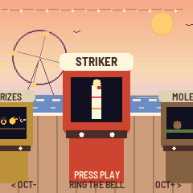
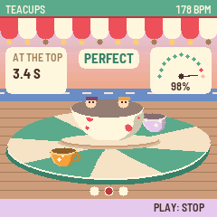
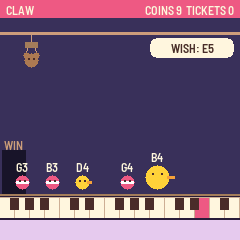
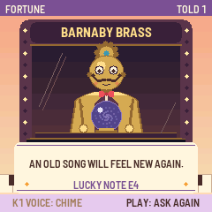

Boardwalk
Boardwalk turns the M-VAVE FM-1 into a seaside arcade of music games. Walk along the boardwalk at golden hour, the sea and the gulls behind you, each cabinet playing its own little tune, and step up to one: ring the changes on a tower's bells, name a note by ear, play a song on falling tiles, fly a gull through a pier's posts, ride a roller coaster whose track is the melody. Every game pays out tickets, and the prize counter at the start of the row trades them for prizes, from a sticker to a giant teddy.




Version 0.9. Installing is at your own risk; the installer can put M-VAVE's own firmware back.
- Try it in the browser: the same code the FM-1 runs, with sound. No FM-1 needed.
- Install: from Chrome or Edge, with the FM-1 connected by USB.
- Download boardwalk-0.9.fwsc: for the command-line installer,
python3 base/tools/fm1_install.py boardwalk-0.9.fwsc. - Source: MPL-2.0. Built on fm1-base and felucca-bsp, from Felucca by Leo Kuroshita, Hügelton Instruments.
Playing
On the boardwalk, OCT− / OCT+ (or SELECT) walk along the cabinets and PLAY steps up to the one in front. In a game, PLAY starts and stops a round, the keys play it, KNOB 1 picks its level or mode, and HOME steps back to the boardwalk. On the boardwalk, KNOB 1 sets the sea and KNOB 2 the cabinets' tunes.
| Cabinet | What it is |
|---|---|
| Prizes | Trade your tickets: sixteen prizes on the white keys, PLAY trades |
| Striker | Ring the bell: strike as the swinging pointer passes the mark asked |
| Moles | Whack the moles as they pop up from the keys; a good run of whacks is a tune |
| Balloons | Hold a key to pump, let go on the ring; past it, a pop you can't see |
| Tiles | Play the song on falling tiles: Ode to Joy, Für Elise, Greensleeves and more |
| Gull | Fly a gull through the pier's posts: flap, hold to climb, or sing your height |
| Ducks | A shooting gallery: each duck quacks its note; play it to hit it |
| Teacups | Tap on the waltz's beat to spin your cup; it never stops speeding up |
| Fortune | Ask Barnaby Brass, the brass seer, a question in notes; he answers in a tune and a card |
| Parrot | Play back what the parrot sings, one more note each time |
| Bumpers | The dodgems: steer with the keys, bump the cars low note to high |
| Echo | Call and response: play back each bar's rhythm on any key |
| Claw | Steer the claw with the keys to the toy the machine wishes for (it plays the toy's note) |
| Pitch | Name the note by ear, or hold a tone in tune against a drifting one |
| Fishing | Cast under a fish, hook it on its note, reel with the tug |
| Chord Code | Hear a chord, find its notes, with marks for right and other octave |
| Coaster | The track is the melody: play each run's notes to keep the train going |
| Bells | Change ringing: ring one bell of a tower's six or eight, a pair as on handbells, or conduct |
Each game keeps its best. A finished round pays tickets, more for playing well and on harder levels, and on the way out the cabinet feeds them out of its slot. Prizes you trade for sit on the boardwalk's rail; two of them change the boardwalk itself.
Boardwalk also tells the FM-1 Screen Reader what its screen shows, over USB.
To go back to the official firmware, use the installer's "Back to the stock firmware", or M-VAVE's updater, M-UPGRADE, from m-vave.com/download.
Change ringing's methods are written from the Central Council of Church Bell Ringers' collection; the songs are traditional or long out of copyright. Some cabinets are inspired by classic games (Simon, Flappy Bird, Piano Tiles, Whac-A-Mole); none of their code, art or names is used. M-VAVE and FM-1 are trademarks of their owners, as are the games named; Boardwalk is not affiliated with any of them.